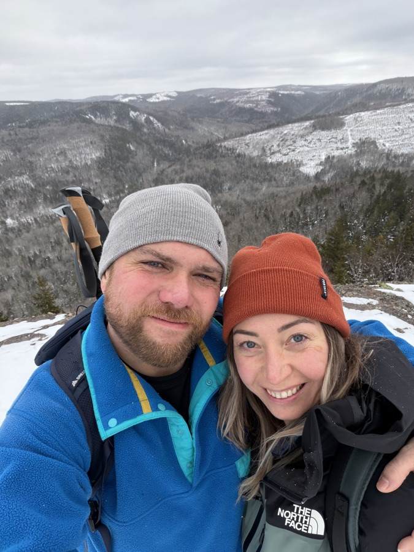

Designing a Wi-Fi Smoker Fan Controller
Electronics and temperature control for a smoker blower.
Building Switchboard: Workspaces for AI Coding Agents
A control panel for managing personal agent workspaces.
Free Will and Random Numbers
From Reddit comments to public Bluesky replies as seeds.
J{AI}MES — My AI Coding Setup
Experiments with opencode and a personal AI coding workflow.
Zero to Production in Rust
Building along with Luca Palmieri’s guide to production-ready Rust.
Let’s Go & Let’s Go Further
Two books by Alex Edwards that helped deepen my Go skills.
Building a Chip-8 Emulator in C
From the instruction set to a debugger and disassembler.
Random Number API
A Go API for random numbers, strings, and UUIDs. It has secure options for secrets and a separate, non-cryptographic experiment seeded by public Bluesky replies.
Random Number Bot
A Discord bot that brings the Random Number API into chat.
About
I started out writing software for thermal testing equipment. Later I worked on Linux security products at IBM. At MinuteBox, I build integrations and internal APIs with Go, TypeScript, and Google Cloud.
On my own time I’ve written an emulator, built a random number API, and tinkered with a Wi-Fi controller for my smoker.
Experience
Senior Software Developer
MinuteBox
Building third-party integrations, product features, and internal APIs for filings and searches with Go, TypeScript, and Google Cloud. Helping shape internal AI development tools.
Security Software Developer
IBM
Integrated RHEL systems and tools, and collaborated across teams using Java, PostgreSQL, Bash, Python, and Go.
Product Engineer
IBM
Investigated complex code and system issues as a third-line responder. Worked with support and development teams to deliver workarounds, hot fixes, and resolutions.
R&D Team Lead & Software Developer
Thermtest
Led R&D and production teams, built embedded and desktop software, and developed internal systems and CI pipelines. Successfully applied for and completed an IRAP project.
Education
Certificate in Software Development
University of New Brunswick · 2016–2018
Information Systems Specialist with Cisco
CompuCollege · 2002–2004
Patent work
Temperature Control Device and Method
US 16/592,858 · Filed Oct 4, 2019
Opposing hot and cold cells for stable thermal conductivity testing.
Latching Relays in Signal Switching
CA 2819325 · Filed Jun 26, 2013
Switching multiple signal sources to a single measuring device.
Outside of work
I like hiking, woodworking, and welding. I’m also always up for a recommendation for a good whisky or a trail I haven’t tried.
